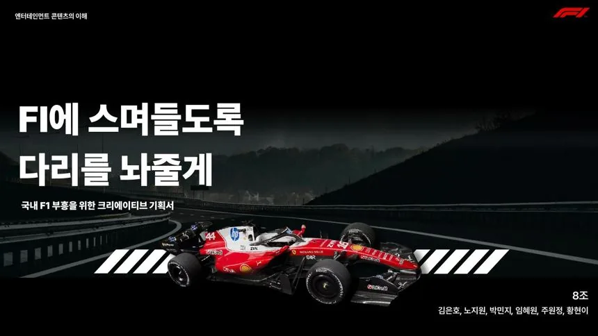

01Insight & Strategy
F1을 보는 것에서, F1을 경험하는 것으로.
Insight
영화에서 끝나는 팬 경험 → 화면 밖 경험으로 확장
Strategy
F1의 신호 체계를 팝업 공간의 경험 언어로 전환
Yellow Flag · Red Flag · Pit Stop을 공간 경험으로 재해석했습니다.
02Experience & Execution
아이디어를 실제 경험으로 만들었습니다.
01
Space
팝업 동선 설계 —
메인 로비 → 라이브 레이스 라운지
02
Partnership
브랜드 제휴 가이드북 4종 —
Nintendo · McDonald’s · Taxi · F1
03
Prototype
공간 경험을 인터랙티브 프로토타입으로 구현
03Planning Deck
기획 PPT
전략을 드러내는 대표 3장만 골랐습니다 — 슬라이드나 버튼을 누르시면 전체 기획안을 보실 수 있습니다.

P.1 · 표지 P.15 · 컨셉
P.15 · 컨셉 P.21 · 공간 동선
P.21 · 공간 동선04Brand Guidebooks
브랜드 제휴 가이드북 4종
표지를 누르시면 각 가이드북 전체 페이지가 열립니다.
05Prototype Video
인터랙티브 공간 프로토타입
방문자가 팝업 공간을 가상으로 걸어 다니는 프로토타입을 직접 구현했습니다.
06 · Insight
기획을 슬라이드에서 끝내지 않고, 경험할 수 있는 결과물까지 만들었습니다.
공간 경험은 문장으로 전달되지 않는다고 판단했습니다. 그래서 신호 체계를 공간 언어로 바꾸고, 직접 이동해볼 수 있는 프로토타입으로 구현했습니다.
원안→논리 구조→대본→가이드북→프로토타입